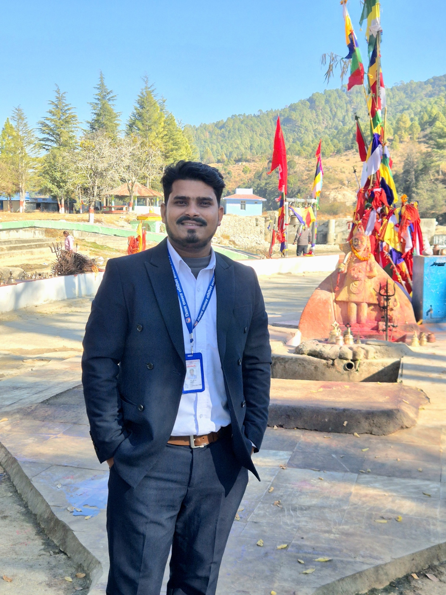

About Me
Name: Sanjay Kumar Lodh
Profession: Civil Engineer
Address: Suddhodhan-06, Rupandehi
Contact: 9860369578
Email: sanjaylodh7@gmail.com
Education
- SLC from Gurauliya Secondary School, Suddhodhan-06
- 10+2 from Trinity International Higher Secondary School, Dillibazar, Kathmandu
- Bachelor in Civil Engineering from Pulchowk Campus, Lalitpur
Work Experience
- Sub Engineer at Federal Water Supply and Sanitation Project, Birgunj (2022–2023)
- Secondary Level Teacher at Pharsatikar Secondary School, Rupandehi (2023–2024)
- Civil Engineer – 7th Level at Pokhara Metropolitan City Office, Kaski (2024–2025)
- Currently Civil Engineer (Gazetted Third Class) at District Coordination Committee Office, Dadeldhura
Software Skills
AutoCAD, Civil3D, ETABS, GIS
Coding Skills
Python, C-Programming
Interests
Listening to Music, Watching Movies, Travelling
My YouTube Channel
Explore my tutorials here: SANJAY'S CIVIL UNIVERSE